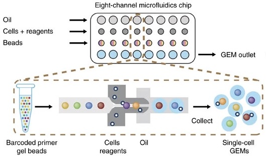
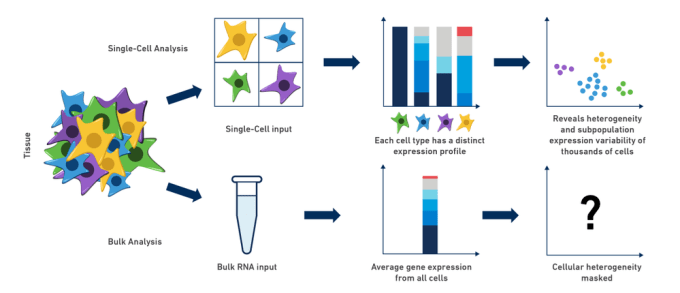

Introduction to Single Cell RNA-seq
Overview
Teaching: 45 min
Exercises: 10 minQuestions
What is single cell RNA-seq?
What is the difference between bulk RNA-seq and single cell RNA-seq?
How do I choose between bulk RNA-seq and single cell RNA-seq
Objectives
Describe the overall experimental process of generating single-cell transcriptomes.
Describe instances where bulk vs. single cell RNA-Seq methods are uniquely appropriate.
Brief overview of single cell transcriptomics technology
Single cell RNA-sequencing (scRNA-Seq) is a method of quantifying transcript expression levels in individual cells. scRNA-Seq technology can take on many different forms and this area of research is rapidly evolving. In 2022, the most widely used systems for performing scRNA-Seq involve separating cells and introducing them into a microfluidic system which performs the chemistry on each cell individually (droplet-based scRNA-Seq).
In this workshop we will primarily focus on the 10X Genomics technology. 10X Genomics is a market leader in the single cell space and was among the first technologies that made it feasible to profile thousands of cells simultaneously. Single cell technology is changing rapidly and it is not clear whether any other companies will be able to successfully challenge 10X’s dominance in this space.
The steps in droplet scRNA-Seq are:
- Cell isolation:
- If the cells are part of a tissue, the cells are disaggregated using collagenase or other reagents. The specifics of this protocol can vary greatly due to differences between tissues that are biological in nature. If the cells are in culture or suspension, they may be used as-is.
- Assess cell viability.
- If scRNA-Seq is being performed on fresh tissue, the cells are usually checked for viability. We want “happy” cells loaded into the machine. We might hope for >90% viable and set a minimum threshold of >70%, although these numbers can vary greatly depending on the experiment.
- Droplet formation inside instrument:
- Using a microfluidic system, each cell is suspended in a nanoliter-size droplet along with a barcoded primer bead. The cells are kept separate from each other in an oil/water emulsion.
- Cell lysis, generating complementary DNA (cDNA):
- The cells are lysed in each droplet. Each cell was already encapsulated with a barcoded primer bead which has a primer specific to that cell. Often a poly-d(T) primer is used to prime the poly(A) tail of mRNA. Complementary DNA is transcribed and correct primers are added for Illumina sequencing.
- Library generation:
- Oil is removed to destroy droplets and homogenize the mixture. cDNA is amplified by PCR. The cDNA is sequenced on any Illumina machine. Sequencing should be paired-end – one read contains cell and molecule barcodes, while the other read contains the target transcript that was captured. We will discuss the sequence files in more detail in a later lesson. Any service provider who generates scRNA-Seq data for you should know how to properly set up in Illumina run to get you the data you need.

What is scRNA-Seq useful for?
Single cell RNA-Seq is a new technology and its uses are limited only by your imagination! A few examples of problems that have been addressed using scRNA-Seq include:
- developmental studies & studies of cellular trajectories.
- detailed tissue atlases.
- characterization of tumor clonality.
- definition of cell-type specific transcriptional responses (e.g. T-cell response to infection)
- profiling of changes in cell state (i.e. homeostasis vs. response state)
- a variety of different types of CRISPR screens
Comparing and contrasting scRNA-Seq with bulk RNA-Seq
Bulk RNA-Seq and single cell RNA-Seq are related in that they both assess transcription levels by sequencing short reads, but these two technologies have a variety of differences. Neither technology is always better. The approach that one might use should depend upon the information one hopes to gather.
Consider the following points when assessing the differences between the technologies and choosing which to utilize for your own experiment:
- Tissues are heterogeneous mixtures of diverse cell types. Bulk RNA-Seq data consists of average measures of transcripts expressed across many different cell types, while scRNA-Seq data is cell-type resolved.
- Bulk RNA-Seq data may not be able to distinguish between changes in gene expression versus changes in tissue cell composition.
- Bulk RNA-Seq allows for much higher sequencing coverage for each gene and often captures more total genes.
- Bulk RNA-Seq allows for better isoform detection due to the higher sequencing depth and relatively uniform coverage across transcripts (vs. a typical 3’ bias in scRNA-Seq).
- Genes without poly-A tail (e.g. some noncoding RNAs) might not be detected in scRNA-Seq, but can be reliably assessed using bulk RNA-Seq.
 https://www.10xgenomics.com/blog/single-cell-rna-seq-an-introductory-overview-and-tools-for-getting-started
Challenge
For each of these scenarios, choose between using bulk RNA-Seq and scRNA-Seq to address your problem.
Differentiation of embryonic stem cells to another cell type
Solution
You would likely find single cell RNA-Seq most powerful in this situation since the cells are differentiating along a continuous transcriptional gradient.
Studying aging with a specific focus on the senescence-involved (e.g. ref) gene Cdkn2a
Solution
Since you are interested in the expression of a single gene (Cdkn2a), bulk RNA-seq may be a better choice because of the greater sequencing depth and the potenial to identify isoforms.
Studying variation in vaccine response by profiling peripheral blood mononuclear cells (PBMCs) –
Solution
Since you are likely interested in gene expression within specific cell types, single cell RNA-seq may be a better choice because you will be able to quantify cell proportions and cell-specific gene expression.
Doing functional genomics in a non-model species
Solution
Non-model organsms may not have a well-developed reference genome or transcript annotation. Thus, you may need to use tools which perform de-novo transcript assembly and then align your reads to that custom transcriptome. De-novo transcript assembly requires greater sequencing depth, which single-cell RNA-Seq may not provide. Therefore we would recommend using bulk RNA-Seq in this situation.
Studying micro RNAs
Solution
MicroRNAs are not currently assayed by most scRNA-Seq technologies. Thus bulk RNA-Seq, with an enrichment for small RNAs, would be the better choice here.
Performing gene expression quantitative trait locus (eQTL) mapping
Solution
You may want good estimates of transcript abundance in your tissue of interest, so bulk RNA-Seq may be a good choice here. However, you may be able to aggregate scRNA-Seq expression for each cell type and perform eQTL mapping. Therefore both technologies could be informative!
Single cell data modalities
There are several different modalities by which one can gather data on the molecular properties of single cells. 10X Genomics currently offers the following reliable assays:
- RNA-seq - assess gene expression in single cells. A sub-group of single cell gene expression is single nucleus gene expression, which is often used on frozen samples or for tissues where preparing a single cell suspension is difficult or impossible (e.g. brain).
- ATAC-seq - assess chromatin accessibility in single cells
- “Multiome” - RNA + ATAC in the same single cells
- Immune repertoire profiling - assess clonality and antigen specificity of adaptive immune cells (B and T cells)
- CITE-Seq - assess cell surface protein levels
- Spatial transcriptomics/proteomics - assess gene expression and/or protein abundance with near-single cell resolution
Focus of this course: 10X Genomics mouse scRNA-Seq
While there are several commercially available scRNA-seq technologies, this course will focus on data generated by the 10X Genomics platform. This technology is widely used at JAX, and it is flexible, reliable, and relatively cost-efficient. We will focus on a mouse data set, although most of the techniques that you will learn in this workshop apply equally well to other species. Each data modality has its own strengths and weaknesses; in this course we will focus on transcriptomics.
Brief overview of instrumentation and library preparation choices available from 10X Genomics
10X Genomics offers a variety of options for profiling single cells. Here we give a brief overview of some of their offerings to illustrate what is available.
To profile gene expression, users can choose from several options:
- 3’ gene expression – the “usual” option, amplifies from the 3’ end of transcripts
- 5’ gene expression – another option for profiling gene expression that captures from the 5’ end of the transcript. See this link for some information on 3’ vs 5’ gene expression
- “targeted” gene expression – focus on a smaller number of genes that are of particular interest
One can also choose to profile gene expression on different instruments. The “workhorse” 10X Chromium machine is used for profiling gene expression of up to eight samples totaling 25k-100k cells. The newer Chromium X is a higher throughput instrument which can profile up to 16 samples and up to one million cells. There are also variations in the kits that can be purchased to perform library preparation. In general 10X Genomics does a fairly good job of continuously improving the chemistry such that the data quality continues to improve. More information is available from 10X Genomics.
10X Genomics also produces a suite of other instrumentation for applications such as spatial transcriptomics (Visium) or in situ profiling (Xenium), which we will not cover in this course.
Key Points
Single cell methods excel in defining cellular heterogeneity and profiling cells differentiating along a trajectory.
Single cell RNA-Seq data is sparse and cannot be analyzed using standard bulk RNA-Seq approaches.
Bulk transcriptomics provides a more in-depth portrait of tissue gene expression, but scRNA-Seq allows you to distinguish between changes in cell composition vs gene expression.
Different experimental questions can be investigated using different single-cell sequencing modalities.